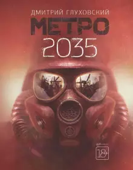

Вселенная Metro 2033 - описывается как Москва, так и другие регионы мира, причём значительная часть событий происходит в метрополитенах, где выжившие укрылись во время ядерной войны, но по прошествии времени не могут вернуться на поверхность из-за постоянного радиационного фона на ней.
По сюжету книг серии, 6 июля 2013 года[4] началась Третья мировая война, в ходе которой из-за масштабного применения оружия массового поражения (прежде всего ядерного и биологического) погибла большая часть человечества. Даже спустя двадцать лет после ядерной войны на поверхности по большей части наблюдается высокий уровень радиации, не позволяющий человеку находиться там без средств защиты. Поверхность густо населена всевозможными мутантами, мутировавшими из обычных видов вследствие применения биологического оружия. Большая часть мутантов агрессивно настроена по отношению к человеку. Война привела к масштабным изменениям климата и рельефа планеты: так, в Западной Европе начался новый ледниковый период, Сахара превратилась в непроходимые джунгли, Венецианская лагуна высохла, а Крымский полуостров отделил от материка Донской пролив. Также, возможно, затонул Японский архипелаг. Выжившие люди укрылись в подземных убежищах (системах метрополитена и бункерах), а также в местах с низким уровнем радиоактивности, позже сплачиваясь в общины по географическому или идеологическому признакам. Число выживших людей на 2033 год составляет порядка нескольких сотен миллионов. Общины выживших либо изолированы друг от друга, либо имеют контакты только с ближайшими соседями. Между некоторыми общинами по поверхности курсируют торговцы-караванщики в составе хорошо вооружённых моторизированных караванов. В качестве универсальной валюты, как правило, используются патроны.
| Часть вселенной | Внешний вид | Описание книги |
|---|---|---|
| Metro 2033 | 2033 год. Весь мир лежит в руинах. Человечество почти полностью уничтожено. Москва превратилась в город‑призрак, отравленный радиацией и населённый чудовищами. Немногие выжившие люди прячутся в московском метро — самом большом противоатомном бомбоубежище на земле. Его станции превратились в города‑государства, а в туннелях царит тьма и обитает ужас. Артему, жителю ВДНХ, предстоит пройти через все метро, чтобы спасти от страшной опасности свою станцию, а может быть, и всё человечество. | |
| Metro 2034 | 2034 год. Мир уничтожен ядерной войной. Жизнь на поверхности Земли больше невозможна. Спаслись только те, кто, услышав сигнал тревоги, успел добежать до дверей московского метро — самого большого в мире бомбоубежища. Два десятилетия спустя станции метро превратились в города‑государства, а путь между ними лежит сквозь мрак и опасности туннелей. Цивилизация исчезает. Человек постепенно забывает о том, что делало его человеком. Станция Севастопольская — маленькая подземная Спарта, противостоящая в одиночку ордам нечисти — оказывается отрезана от большого метро и будет неминуемо уничтожена. Чтобы спасти ее, нужен настоящий герой... Или героиня? | |
| Metro 2035 |  | Третья мировая стерла человечество с лица Земли. Планета опустела. Мегаполисы обращены в прах и пепел. Железные дороги ржавеют. Спутники одиноко болтаются на орбите. Радио молчит на всех частотах. Выжили только те, кто, услышав сирены тревоги, успел добежать до дверей московского метро. Там, на глубине в десятки метров, на станциях и в туннелях, люди пытаются переждать конец света. Там они создали себе новый мирок вместо потерянного огромного мира. Они цепляются за жизнь изо всех сил и отказываются сдаваться. Они мечтают вернуться наверх — однажды, когда радиационный фон от ядерных бомбардировок спадет. И не оставляют надежды найти других выживших... «Метро 2035» продолжает — и завершает историю Артема из первой книги культовой трилогии. |